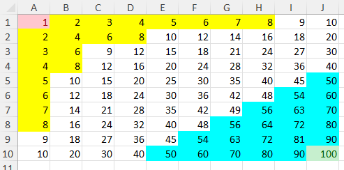
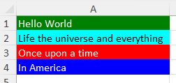
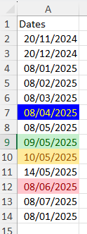
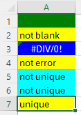

Conditional format functions
XLSX.getConditionalFormats — Function
getConditionalFormats(ws::Worksheet)Get the conditional formats for a worksheet.
Arguments
ws::Worksheet: The worksheet for which to get the conditional formats.
Return a vector of pairs: CellRange => NamedTuple{type::String, priority::Int}}.
XLSX.setConditionalFormat — Function
setConditionalFormat(ws::Worksheet, cr::String, type::Symbol; kw...) -> ::Int
setConditionalFormat(xf::XLSXFile, cr::String, type::Symbol; kw...) -> ::Int
setConditionalFormat(ws::Worksheet, rows, cols, type::Symbol; kw...) -> ::IntAdd a new conditional format to a cell range, row range or column range in a worksheet or XLSXFile. Alternatively, ranges can be specified by giving rows and columns separately.
There are many options for applying differnt types of custom format. For a basic guide, refer to the section on Conditional formats in the Formatting Guide.
The type argument specifies which of Excel's conditional format types will be applied.
Valid options for type are:
:cellIs:top10:aboveAverage:containsText:notContainsText:beginsWith:endsWith:timePeriod:containsErrors:notContainsErrors:containsBlanks:notContainsBlanks:uniqueValues:duplicateValues:dataBar:colorScale:iconSet
Keyword options differ according to the type specified, as set out below.
type = :cellIs
Defines a conditional format based on the value of each cell in a range.
Valid keywords are:
operator: Defines the comparison to make.value: defines the first value to compare against. This can be a cell reference (e.g."A1") or a number.value2: defines the second value to compare against. This can be a cell reference (e.g."A1") or a number.stopIfTrue: Stops evaluating further conditional formats in any cell if this one is true.dxStyle: Used optionally to select one of the built-in Excel formats to applyformat: defines the numFmt to apply if opting for a custom format.font: defines the font to apply if opting for a custom format.border: defines the border to apply if opting for a custom format.fill: defines the fill to apply if opting for a custom format.
All keywords are defined using Strings (e.g. value = "2" or value = "A2").
The keyword operator defines the comparison to use in the conditional formatting. If the condition is met, the format is applied. Valid options are:
greaterThan(cell >value) (default)greaterEqual(cell >=value)lessThan(cell <value)lessEqual(cell <=value)equal(cell ==value)notEqual(cell !=value)between(cell betweenvalueandvalue2)notBetween(cell not betweenvalueandvalue2)
If not specified (when required), value will be the arithmetic average of the (non-missing) cell values in the range if values are numeric. If the cell values are non-numeric, an error is thrown.
Formatting to be applied if the condition is met can be defined in one of two ways. Use the keyword dxStyle to select one of the built-in Excel formats. Valid options are:
redfilltext(light red fill, dark red text) (default)yellowfilltext(light yellow fill, dark yellow text)greenfilltext(light green fill, dark green text)redfill(light red fill)redtext(dark red text)redborder(dark red cell borders)
Alternatively, you can define a custom format by using the keywords format, font, border, and fill which each take a vector of pairs of strings. The first string is the name of the attribute to set and the second is the value to set it to. Valid attributes for each keyword are:
format:formatfont:color,bold,italic,under,strikefill:pattern,bgColor,fgColorborder:style,color
Refer to setFormat(), setFont(), setFill() and setBorder() for more details on the valid attributes and values.
Excel limits the formatting attributes that can be set in a conditional format. It is not possible to set the size or name of a font and neither is it possible to set any of the cell alignment attributes. Diagonal borders cannot be set either.
Although it is not a limitation of Excel, this function sets all the border attributes for each side of a cell to be the same.
If both dxStyle and custom formatting keywords are specified, dxStyle will be used and the custom formatting will be ignored. If neither dxStyle nor custom formatting keywords are specified, the default is dxStyle="redfilltext".
Examples
julia> XLSX.setConditionalFormat(s, "B1:B5", :cellIs) # Defaults to `operator="greaterThan"`, `dxStyle="redfilltext"` and `value` set to the arithmetic agverage of cell values in `rng`.
julia> XLSX.setConditionalFormat(s, "B1:B5", :cellIs;
operator="between",
value="2",
value2="3",
fill = ["pattern" => "none", "bgColor"=>"FFFFC7CE"],
format = ["format"=>"0.00%"],
font = ["color"=>"blue", "bold"=>"true"]
)
julia> XLSX.setConditionalFormat(s, "B1:B5", :cellIs;
operator="greaterThan",
value="4",
fill = ["pattern" => "none", "bgColor"=>"green"],
format = ["format"=>"0.0"],
font = ["color"=>"red", "italic"=>"true"]
)
julia> XLSX.setConditionalFormat(s, "B1:B5", :cellIs;
operator="lessThan",
value="2",
fill = ["pattern" => "none", "bgColor"=>"yellow"],
format = ["format"=>"0.0"],
font = ["color"=>"green"],
border = ["style"=>"thick", "color"=>"coral"]
)
type = :top10
This conditional format can be used to highlight cells in the top (bottom) n within the range or in the top (bottom) n% (ie in the top 5 or in the top 5% of values in the range).
The available keywords are:
operator: Defines the comparison to make.value: Gives the for comparison or a cell reference (e.g."A1").stopIfTrue: Stops evaluating further conditional formats in any cell if this one is true.dxStyle: Used optionally to select one of the built-in Excel formats to apply.format: defines the numFmt to apply if opting for a custom format.font: defines the font to apply if opting for a custom format.border: defines the border to apply if opting for a custom format.fill: defines the fill to apply if opting for a custom format.
Valid values for the operator keyword are the following:
topN(cell is in the top n (=value) values of the range)bottomN(cell is in the bottom n (=value) values of the range)topN%(cell is in the top n% (=value) values of the range)bottomN%(cell is in the bottom n% (=value) values of the range)
Default keyowrds are operator="TopN" and value="10".
Multiple conditional formats may be applied to the same or overlapping cell ranges. If stopIfTrue=true the first condition that is met will be applied but all subsequent conditional formats for that cell will be skipped. If stopIfTrue=false (default) all relevant conditional formats will be applied to the cell in turn.
For example usage of the stopIfTrue keyword, refer to Overlaying conditional formats in the Formatting Guide.
The remaining keywords are defined as above for type = :cellIs.
Examples
julia> f=XLSX.newxlsx()
XLSXFile("C:\...\blank.xlsx") containing 1 Worksheet
sheetname size range
-------------------------------------------------
Sheet1 1x1 A1:A1
julia> s=f[1]
1×1 XLSX.Worksheet: ["Sheet1"](A1:A1)
julia> for i=1:10;for j=1:10; s[i,j]=i*j;end;end
julia> s[:]
10×10 Matrix{Any}:
1 2 3 4 5 6 7 8 9 10
2 4 6 8 10 12 14 16 18 20
3 6 9 12 15 18 21 24 27 30
4 8 12 16 20 24 28 32 36 40
5 10 15 20 25 30 35 40 45 50
6 12 18 24 30 36 42 48 54 60
7 14 21 28 35 42 49 56 63 70
8 16 24 32 40 48 56 64 72 80
9 18 27 36 45 54 63 72 81 90
10 20 30 40 50 60 70 80 90 100
julia> XLSX.setConditionalFormat(s, "A1:J10", :top10; operator="bottomN", value="1", stopIfTrue="true", dxStyle="redfilltext")
0
julia> XLSX.setConditionalFormat(s, "A1:J10", :top10; operator="topN", value="1", stopIfTrue="true", dxStyle="greenfilltext")
0
julia> XLSX.setConditionalFormat(s, "A1:J10", :top10;
operator="topN%",
value="20",
fill=["pattern"=>"solid", "bgColor"=>"cyan"])
0
julia> XLSX.setConditionalFormat(s, "A1:J10", :top10;
operator="bottomN%",
value="20",
fill=["pattern"=>"solid", "bgColor"=>"yellow"])
0

type = :aboveAverage
This conditional format can be used to compare cell values in the range with the average value for the range.
The available keywords are:
operator: Defines the comparison to make.stopIfTrue: Stops evaluating further conditional formats in any cell if this one is true.dxStyle: Used optionally to select one of the built-in Excel formats to apply.format: defines the numFmt to apply if opting for a custom format.font: defines the font to apply if opting for a custom format.border: defines the border to apply if opting for a custom format.fill: defines the fill to apply if opting for a custom format.
Valid values for the operator keyword are the following:
aboveAverage(cell is above the average of the range) (default)aboveEqAverage(cell is above or equal to the average of the range)plus1StdDev(cell is above the average of the range + 1 standard deviation)plus2StdDev(cell is above the average of the range + 2 standard deviations)plus3StdDev(cell is above the average of the range + 3 standard deviations)belowAverage(cell is below the average of the range)belowEqAverage(cell is below or equal to the average of the range)minus1StdDev(cell is below the average of the range - 1 standard deviation)minus2StdDev(cell is below the average of the range - 2 standard deviations)minus3StdDev(cell is below the average of the range - 3 standard deviations)
The remaining keywords are defined as above for type = :cellIs.
Examples
julia> using Random, Distributions
julia> d=Normal()
Normal{Float64}(μ=0.0, σ=1.0)
julia> columns=rand(d,1000)
1000-element Vector{Float64}:
-1.5515478694605092
0.36859583733587165
1.5349535865662158
-0.2352610551087202
0.12355875388105911
0.5859222303845908
-0.6326662651426166
1.0610118292961683
-0.7891578831398097
0.031022172414689787
-0.5534440118018843
-2.3538883599955023
⋮
0.4813001892130465
0.03871017417416217
0.7224728281160403
-1.1265372949908539
1.5714393857211955
0.31438739499933255
0.4852591013082452
0.5363388236349432
1.1268430910133729
0.7691442442244849
1.0061732938516454
julia> f=XLSX.newxlsx()
XLSXFile("C:\...\blank.xlsx") containing 1 Worksheet
sheetname size range
-------------------------------------------------
Sheet1 1x1 A1:A1
julia> s=f[1]
1×1 XLSX.Worksheet: ["Sheet1"](A1:A1)
julia> XLSX.writetable!(s, [columns], ["normal"])
julia> XLSX.setConditionalFormat(s, "A2:A1001", :aboveAverage ;
operator="plus3StdDev",
stopIfTrue="true",
fill = ["pattern"=>"solid", "bgColor"=>"red"],
font = ["color"=>"white", "bold"=>"true"])
0
julia> XLSX.setConditionalFormat(s, "A2:A1001", :aboveAverage ;
operator="minus3StdDev",
stopIfTrue="true",
fill = ["pattern"=>"solid", "bgColor"=>"red"],
font = ["color"=>"white", "bold"=>"true"])
0
julia> XLSX.setConditionalFormat(s, "A2:A1001", :aboveAverage ;
operator="plus2StdDev",
stopIfTrue="true",
fill = ["pattern"=>"solid", "bgColor"=>"tomato"],
font = ["color"=>"white", "bold"=>"true"])
0
julia> XLSX.setConditionalFormat(s, "A2:A1001", :aboveAverage ;
operator="minus2StdDev",
stopIfTrue="true",
fill = ["pattern"=>"solid", "bgColor"=>"tomato"],
font = ["color"=>"white", "bold"=>"true"])
0
julia> XLSX.setConditionalFormat(s, "A2:A1001", :aboveAverage ;
operator="minus1StdDev",
stopIfTrue="true",
fill = ["pattern"=>"solid", "bgColor"=>"pink"],
font = ["color"=>"white", "bold"=>"true"])
0
julia> XLSX.setConditionalFormat(s, "A2:A1001", :aboveAverage ;
operator="plus1StdDev",
stopIfTrue = "true",
fill = ["pattern"=>"solid", "bgColor"=>"pink"],
font = ["color"=>"white", "bold"=>"true"])
0
julia> XLSX.setConditionalFormat(s, "A2:A1001", :aboveAverage ;
operator="belowEqAverage",
fill = ["pattern"=>"solid", "bgColor"=>"green"],
font = ["color"=>"white", "bold"=>"true"])
0
julia> XLSX.setConditionalFormat(s, "A2:A1001", :aboveAverage ;
operator="aboveEqAverage",
fill = ["pattern"=>"solid", "bgColor"=>"green"],
font = ["color"=>"white", "bold"=>"true"])
0
type = :containsText, :notContainsText, :beginsWith or :endsWith
Highlight cells in the range that contain (or do not contain), begin or end with a specific text string. The default is containsText.
Valid keywords are:
value: Gives the literal text to match or provides a cell reference (e.g."A1").stopIfTrue: Stops evaluating further conditional formats in any cell if this one is true.dxStyle: Used optionally to select one of the built-in Excel formats to apply.format: defines the numFmt to apply if opting for a custom format.font: defines the font to apply if opting for a custom format.border: defines the border to apply if opting for a custom format.fill: defines the fill to apply if opting for a custom format.
The keyword value gives the literal text to compare (eg. "Hello World") or provides a cell reference (e.g. "A1"). It is a required keyword with no default value.
The remaining keywords are optional and are defined as above for type = :cellIs.
Examples
julia> s[:]
4×1 Matrix{Any}:
"Hello World"
"Life the universe and everything"
"Once upon a time"
"In America"
julia> XLSX.setConditionalFormat(s, "A1:A4", :containsText;
value="th",
fill = ["pattern"=>"solid", "bgColor"=>"cyan"],
font = ["color"=>"black", "bold"=>"true"])
0
julia> XLSX.setConditionalFormat(s, "A1:A4", :notContainsText;
value="i",
fill = ["pattern"=>"solid", "bgColor"=>"green"],
font = ["color"=>"white", "bold"=>"true"])
0
julia> XLSX.setConditionalFormat(s, "A1:A4", :beginsWith ;
value="On",
fill = ["pattern"=>"solid", "bgColor"=>"red"],
font = ["color"=>"white", "bold"=>"true"])
0
julia> XLSX.setConditionalFormat(s, "A1:A4", :endsWith ;
value="ica",
fill = ["pattern"=>"solid", "bgColor"=>"blue"],
font = ["color"=>"white", "bold"=>"true"])
0

type = :timePeriod
When cells contain dates, this conditional format can be used to highlight cells. The available keywords are:
operator: Defines the comparison to make.stopIfTrue: Stops evaluating further conditional formats in any cell if this one is true.dxStyle: Used optionally to select one of the built-in Excel formats to applyformat: defines the numFmt to apply if opting for a custom format.font: defines the font to apply if opting for a custom format.border: defines the border to apply if opting for a custom format.fill: defines the fill to apply if opting for a custom format.
Valid values for the keyword operator are the following:
yesterdaytodaytomorrowlast7Days(default)lastWeekthisWeeknextWeeklastMonththisMonthnextMonth
The remaining keywords are defined as above for type = :cellIs.
Examples
julia> s[1:13, 1]
13×1 Matrix{Any}:
"Dates"
2024-11-20
2024-12-20
2025-01-08
2025-02-08
2025-03-08
2025-04-08
2025-05-08
2025-05-09
2025-05-10
2025-05-14
2025-06-08
2025-07-08
julia> XLSX.setConditionalFormat(s, "A1:A13", :timePeriod; operator="today", dxStyle = "greenfilltext")
0
julia> XLSX.setConditionalFormat(s, "A1:A13", :timePeriod; operator="tomorrow", dxStyle = "yellowfilltext")
0
julia> XLSX.setConditionalFormat(s, "A1:A13", :timePeriod; operator="nextMonth", dxStyle = "redfilltext")
0
julia> XLSX.setConditionalFormat(s, "A1:A13", :timePeriod;
operator="lastMonth",
fill = ["pattern"=>"solid", "bgColor"=>"blue"],
font = ["color"=>"yellow", "bold"=>"true"])
0

type = :containsErrors, :notContainsErrors, :containsBlanks, :notContainsBlanks, :uniqueValues or :duplicateValues
These conditional formatting options highlight cells that contain or don't contain errors, are blank (default) or not blank, are unique in the range or are duplicates within the range. The available keywords are:
stopIfTrue: Stops evaluating further conditional formats in any cell if this one is true.dxStyle: Used optionally to select one of the built-in Excel formats to applyformat: defines the numFmt to apply if opting for a custom format.font: defines the font to apply if opting for a custom format.border: defines the border to apply if opting for a custom format.fill: defines the fill to apply if opting for a custom format.
These keywords are defined as above for the :cellIs conditional format type.
Examples
julia> XLSX.setConditionalFormat(s, "A1:A7", :containsErrors;
stopIfTrue="true",
fill = ["pattern"=>"solid", "bgColor"=>"blue"],
font = ["color"=>"white", "bold"=>"true"])
0
julia> XLSX.setConditionalFormat(s, "A1:A7", :containsBlanks;
stopIfTrue="true",
fill = ["pattern"=>"solid", "bgColor"=>"green"],
font = ["color"=>"black", "bold"=>"true"])
0
julia> XLSX.setConditionalFormat(s, "A1:A7", :uniqueValues;
stopIfTrue="true",
fill = ["pattern"=>"solid", "bgColor"=>"yellow"],
font = ["color"=>"black", "bold"=>"true"])
0
julia> XLSX.setConditionalFormat(s, "A1:A7", :duplicateValues;
fill = ["pattern"=>"solid", "bgColor"=>"cyan"],
font = ["color"=>"black", "bold"=>"true"])
0

type = :expressiom
Set a conditional format when an expression evaluated in each cell is true.
The available keywords are:
formula: Specifies the formula to use. This must be a valid Excel formula.stopIfTrue: Stops evaluating further conditional formats in any cell if this one is true.dxStyle: Used optionally to select one of the built-in Excel formats to applyformat: defines the numFmt to apply if opting for a custom format.font: defines the font to apply if opting for a custom format.border: defines the border to apply if opting for a custom format.fill: defines the fill to apply if opting for a custom format.
The keyword formula is required and there is no default value. Formulae must be valid Excel formulae and written in US english with comma separators. Cell references may be absolute or relative references in either the row or the column or both.
The remaining keywords are defined as above for type = :cellIs.
Examples
julia> XLSX.setConditionalFormat(s, "A1:C4", :expression; formula = "A1 < 16", dxStyle="greenfilltext")
julia> XLSX.setConditionalFormat(s, 1:5, 1:4, :expression;
formula="A1=1",
fill=["pattern" => "none", "bgColor" => "yellow"],
format=["format" => "0.0"],
font=["color" => "green"],
border=["style" => "thick", "color" => "coral"]
)
julia> XLSX.setConditionalFormat(s, "B2:D11", :expression; formula = "average(B$2:B$11) > average(A$2:A$11)", dxStyle = "greenfilltext")
julia> XLSX.setConditionalFormat(s, "A1:E5", :expression; formula = "E5<50", dxStyle = "redfilltext")
type = :dataBar
Apply data bars to cells in a range depending on their values. The keyword databar can be used to select one of 12 built-in databars Excel provides by name. Valid names are:
bluegrad(default)greengradredgradorangegradlightbluegradpurplegradbluegreenredorangelightbluepurple
The first six (with a grad suffix) yield bars with a color gradient while the remainder yield bars of solid color. By default, all built in data bars define their range from the minumum and maximum values in the range and negative values are given a red bar. These default settings can each be modified using the other keyword options available.
Remaining keyword options provided are:
showVal- set to "false" to show databars only and hide cell valuesgradient- set to "false" to use a solid color bar rather than a gradient fillborders- set to "true" to show borders around each barsameNegFill- set to "true" to use the same fill color on negative bars as positive.sameNegBorders- set to "false" to use the same border color on negative bars as positivedirection- determines the direction of the bars from the axis, "leftToRight" or "rightToLeft"min_type- Defines how the minimum of the bar scale is defined ("num", "min", "percent", percentile", "formula" or "automatic")min_val- Defines the minimum value for the data bar scale. May be a number(as a string), a cell reference or a formula (if type="formula").max_type- Defines how the maximum of the bar scale is defined ("num", "max", "percent", percentile", "formula" or "automatic")max_val- Defines the maximum value for the data bar scale. May be a number(as a string), a cell reference or a formula (if type="formula").fill_col- Defines the color of the fill for positive bars (8 digit hex or by name)border_col- Defines the color of the border for positive bars (8 digit hex or by name)neg_fill_col- Defines the color of the fill for negative bars (8 digit hex or by name)neg_border_col- Defines the color of the border for negative bars (8 digit hex or by name)axis_pos- Defines the position of the axis ("middle" or "none")axis_col- Defines the color of the axis (8 digit hex or by name)
Examples
julia> XLSX.setConditionalFormat(s, "A1:A11", :dataBar)
julia> XLSX.setConditionalFormat(s, "B1:B11", :dataBar; databar="purple")
julia> XLSX.setConditionalFormat(s, "D1:D11", :dataBar;
gradient="true",
direction="rightToLeft",
axis_pos="none",
showVal="false"
)
julia> XLSX.setConditionalFormat(s, "F1:F11", :dataBar;
gradient="false",
sameNegFill="true",
sameNegBorders="true"
)
julia> XLSX.setConditionalFormat(f, "Sheet1!G1:G11", :dataBar;
fill_col="coral", border_col = "cyan",
neg_fill_col="cyan", neg_border_col = "coral"
)
julia> XLSX.setConditionalFormat(f, "Sheet1!J1:J11", :dataBar; axis_col="magenta")
julia> XLSX.setConditionalFormat(s, 15:25, 1, :dataBar;
min_type="least", max_type="highest"
)
julia> XLSX.setConditionalFormat(s, 15:25, 2, :dataBar;
databar="purple",
min_type="percent", max_type="percent",
min_val="20", max_val="60"
)
julia> XLSX.setConditionalFormat(s, "C15:C25", :dataBar;
databar="blue",
min_type="num", max_type="num",
min_val="-1", max_val="6",
gradient="true",
direction="leftToRight",
axis_pos="none"
)
julia> XLSX.setConditionalFormat(s, "E15:E25", :dataBar;
gradient="true",
min_type="percentile", max_type="percentile",
min_val="20", max_val="80",
direction="rightToLeft",
axis_pos="middle"
)
julia> XLSX.setConditionalFormat(s, "G15:G25", :dataBar;
min_type="num", max_type="formula",
min_val="$L$1", max_val="$M$1 * $N$1 + 3",
fill_col="coral", border_col = "cyan",
neg_fill_col="cyan", neg_border_col = "coral"
)
type = :colorScale
Define a 2-color or 3-color colorscale conditional format.
Use the keyword colorscale to choose one of the 12 built-in Excel colorscales:
"redyellowgreen": Red, Yellow, Green 3-color scale."greenyellowred": Green, Yellow, Red 3-color scale."redwhitegreen": Red, White, Green 3-color scale."greenwhitered": Green, White, Red 3-color scale."redwhiteblue": Red, White, Blue 3-color scale."bluewhitered": Blue, White, Red 3-color scale."redwhite": Red, White 2-color scale."whitered": White, Red 2-color scale."whitegreen": White, Green 2-color scale."greenwhite": Green, White 2-color scale."yellowgreen": Yellow, Green 2-color scale."greenyellow": Green, Yellow 2-color scale (default).
Alternatively, you can define a custom color scale by omitting the colorscale keyword and instead using the following keywords:
min_type: The type of the minimum value. Valid values are:min,percentile,percent,numorformula.min_val: The value of the minimum. Omit ifmin_type="min".min_col: The color of the minimum value.mid_type: Valid values are:percentile,percent,numorformula. Omit for a 2-color scale.mid_val: The value of the scale mid point. Omit for a 2-color scale.mid_col: The color of the mid point. Omit for a 2-color scale.max_type: The type of the maximum value. Valid values are:max,percentile,percent,numorformula.max_val: The value of the maximum value. Omit ifmax_type="max".max_col: The color of the maximum value.
The keywords min_val, mid_val, and max_val can be a number or cell reference (e.g. "$A$1") for any value of the related type keyword or, if the related type keyword is set to formula, may be a valid Excel formula that calculates a number. Cell references used in a formula must be specified as absolute references.
Colors can be specified using an 8-digit hex string (e.g. FF0000FF for blue) or any named color from Colors.jl.
Examples
julia> XLSX.setConditionalFormat(f["Sheet1"], "A1:F12", :colorScale) # Defaults to the `greenyellow` built-in scale.
0
julia> XLSX.setConditionalFormat(f["Sheet1"], "A13:C18", :colorScale; colorscale="whitered")
0
julia> XLSX.setConditionalFormat(f["Sheet1"], "D13:F18", :colorScale; colorscale="bluewhitered")
0
julia> XLSX.setConditionalFormat(f["Sheet1"], "A13:F22", :colorScale;
min_type="num",
min_val="2",
min_col="tomato",
mid_type="num",
mid_val="6",
mid_col="lawngreen",
max_type="num",
max_val="10",
max_col="cadetblue"
)
0
type = :iconSet
Apply a set of icons to cells in a range depending on their values. The keyword iconset can be used to select one of 20 built-in icon sets Excel provides by name. Valid names are:
3Arrows5ArrowsGray3TrafficLights(default)3Flags5Quarters4Rating5Rating3Symbols3Symbols23Signs3TrafficLights24TrafficLights4BlackToRed4Arrows5Arrows3ArrowsGray4ArrowsGray3Triangles3Stars5Boxes
The digit prefix to the name indicates how many icons there are in a set, and therefore how the cell values with be binned by value. Bin boundaries may optionally be specified by the following keywords to override the default values for each icon set:
min_type= "percent" (default), "percentile", "num" or "formula"min_val(default: "33" (3 icons), "25" (4 icons) or "20" (5 icons))mid_type= "percent" (default), "percentile", "num" or "formula"mid_val(default: "50" (4 icons), "40" (5 icons))mid2_type= "percent" (default), "percentile", "num" or "formula"mid2_val(default: "60" (5 icons))max_type= "percent" (default), "percentile", "num" or "formula"max_val(default: "67" (3 icons), "75" (4 icons) or "80" (5 icons))
The keywords min_val, mid_val, mid2_val and max_val may contain numbers (as strings) or valid cell references. If formula is specified for the related type keyword, a valid Excel formula can be provided to evaluate to the bin threshold value to be used. Three-icon sets require two thresholds (min_type/min_val and max_type/max_val), four-icon sets require three thresholds (with the addition of mid_type/mid_val) and five-icon sets require four thresholds (adding mid2_type/mid2_val). Thresholds defined (using val and type keywords) that are unnecessary are simply ignored.
Each value can be tested using >= (default) or >. To change from the default, optionally set min_gte, mid_gte, mid2_gte and/or max_gte to "false" to use > in the comparison. Any other value for these gte keywords will be ignored and the default >= comparison used.
The built-in icon sets Excel provides are composed of 52 individual icons. It is possible to mix and match any of these to make a custom 3-icon, 4-icon or 5-icon set by specifying iconset = "Custom". The number of icons in the set will be determined by whether the mid_val/mid_type keywords and mid2_val/mid2_type keywords are provided.
The icons that will be used in a Custom iconset are defined using the icon_list keyword which takes a vector of integers in the range from 1 to 52. For a key relating integers to the icons they represent, see the Icon Set section in the Formatting Guide.
The order in which the symbols are appiled can be reversed from the default order (or, for Custom icon sets, the order given in icon_list), by optionally setting reverse = "true". Any other value provided for reverse will be ignored, and the default order applied.
The cell value can be suppressed, so that only the icon is shown in the Excel cell by optionally specifying showVal = "false". Any other value provided for showVal will be ignored, and the cell value will be displayed with the icon.
Examples
XLSX.setConditionalFormat(s, "F2:F11", :iconSet; iconset="3Arrows")
XLSX.setConditionalFormat(s, 2, :, :iconSet; iconset = "5Boxes",
reverse = "true",
showVal = "false",
min_type="num", mid_type="percentile", mid2_type="percentile", max_type="num",
min_val="3", mid_val="45", mid2_val="65", max_val="8",
min_gte="false", mid_gte="false", mid2_gte="false", max_gte="false")
XLSX.setConditionalFormat(s, "A2:A11", :iconSet;
iconset = "Custom",
icon_list = [31,24],
min_type="num", max_type="formula",
min_val="3", max_val="if($G$4="y", $G$1+5, 10)")
XLSX.setColoredDataBars — Function
setColoredDataBars(sheet, rng; [bands], [colors], [breaks], [gte], [showVal],
[direction], [min_type], [min_val], [max_type], [max_val],
[clear]) -> Vector{Pair}Apply data bars to rng whose colour changes with value as well as their length.
Excel has no such conditional format: a dataBar rule carries a single colour and applies to every cell in its range. setColoredDataBars splits rng into value-based bands and writes one data bar rule per band, each over the non-contiguous range of cells falling in that band. The result is a valid workbook that Excel reads without complaint, but it is not something Excel's own interface can produce, and it is not maintained by Excel: see the note on editing below.
bands (default 5) sets how many bands to use, with boundaries placed at equal intervals between the smallest and largest value in rng. Give breaks instead to place the boundaries yourself, as a sorted vector of length(bands)-1 values; breaks overrides bands. By default a cell whose value equals a break falls in the band above it; set gte=false to place it in the band below, or give a vector of Bool with one entry per break.
colors accepts either one colour per band, or exactly two colours to interpolate between (in LCHab, so intermediate hues stay clean). Colours may be names or 8-digit AARRGGBB strings, as elsewhere in XLSX.jl. Note that Colors.jl's named colormaps are not accepted; for a red-amber-green ramp give the three colours explicitly.
showVal and direction are passed through to each band's rule unchanged. Bars are drawn with a solid fill rather than a gradient.
min_type, min_val, max_type and max_val set the value axis shared by every band, and default to num with the minimum and maximum of rng. Only num and formula are accepted: the relative types (percent, percentile, min, max, automatic) are evaluated over each rule's own cells, which for a band is only that band's values, so every band would span the full bar width and bar lengths would carry no meaning.
By default (clear=true) any conditional format lying entirely within rng is removed before the new bands are written, so repeated calls replace rather than accumulate. This matters when re-banding after the data have changed: bands from an earlier call name the cells they covered then, and left in place they would overlay the new ones. Set clear=false to add the bands alongside whatever is already there.
Returns the band label => range pairs written. Bands containing no cells are dropped, so the result may be shorter than bands. Labels keep their position on the scale rather than being renumbered: banding data with only two distinct values across bands=5 may return labels 1 and 5, using the first and last colours of the ramp.
setColoredDataBars is a static formatting function. The bands reflect cell values at the time of writing. If a value is later edited in Excel its bar length updates, but its color does not, because the cell stays in the band it was originally assigned to. Rewrite the conditional formatting to re-band it.
This is a limitation of Excel itself, which does not support dataBars whose color varies with value. setColoredDataBars is a workaround for this.
This function is experimental. It has a full set of tests and Documentation is published but it is not yet marked as public. It may be better included in future only as a documented example rather than as a package function.
Examples
julia> XLSX.setColoredDataBars(sheet, "B2:B101")
julia> XLSX.setColoredDataBars(sheet, "B2:B101"; bands=3, colors=["green", "orange", "red"])
julia> XLSX.setColoredDataBars(sheet, "B2:B101"; breaks=[10, 50], colors=["green", "red"])
julia> XLSX.setColoredDataBars(sheet, "B2:B101"; bands=8, min_val="0", max_val="100")See also setConditionalFormat, clearConditionalFormats.
XLSX.clearConditionalFormats — Function
clearConditionalFormats(ws::Worksheet, rng) -> IntRemove every conditional format whose range falls entirely within rng, returning the number of rules removed.
A rule is removed when all of the cells it applies to lie inside rng. A rule spanning a wider range is left alone, even where it overlaps.